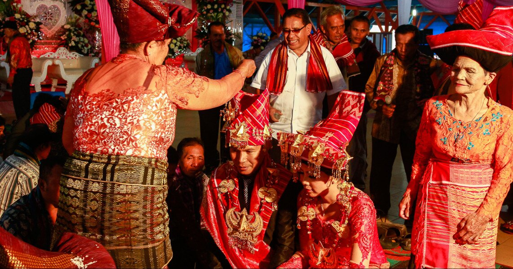
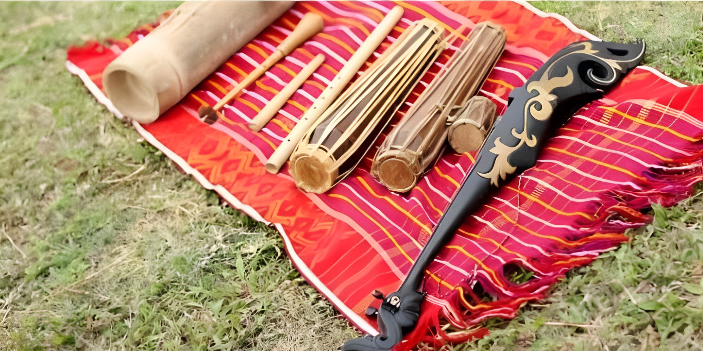

<!DOCTYPE html>
<html lang="en">
    <head>
        <meta charset="UTF-8">
        <meta name="viewport" content="width=device-width, initial-scale=1.0">
        <title>Budaya Indonesia</title>
        <link href="https://cdn.jsdelivr.net/npm/bootstrap@5.3.0/dist/css/bootstrap.min.css" 
        rel="stylesheet" integrity="sha384-9ndCyUaIbzAi2FUVXJi0CjmCapSmO7SnpJef0486qhLnuZ2cdeRhO02iuK6FUUVM" crossorigin="anonymous">
    </head>
    <body>
        <script src="https://cdn.jsdelivr.net/npm/bootstrap@5.3.0/dist/js/bootstrap.bundle.min.js" 
        integrity="sha384-geWF76RCwLtnZ8qwWowPQNguL3RmwHVBC9FhGdlKrxdiJJigb/j/68SIy3Te4Bkz" crossorigin="anonymous"></script>
    </body>
</html>
<body>
   <nav class="navbar navbar-expand-sm navbar-dark bg-dark sticky-top ">
  <div class="container-fluid">
    <a class="navbar-brand mx-5" href="index.html">IndonesiaKu</a>
    <button class="navbar-toggler" type="button" data-bs-toggle="collapse" data-bs-target="#mynavbar">
      <span class="navbar-toggler-icon"></span>
    </button>
    <div class="collapse navbar-collapse justify-content-end mx-2" id="mynavbar">
      <ul class="navbar-nav mx-5 ">
        <li class="nav-item">
          <a class="nav-link ms-3" href="index.html">Destinasi</a>
        </li>
        <li class="nav-item">
          <a class="nav-link ms-3" href="kuliner.html">Kuliner</a>
        </li>
        <li class="nav-item">
          <a class="nav-link ms-3" href="Budaya.html">Budaya</a>
        </li>
      </ul>
    </div>
  </div>
</nav>
        <header>
        <div id="myCarousel" class="carousel slide mb-6" 
        data-bs-ride="carousel" data-bs-theme="light">       
            <div class="carousel-indicators">        
            <button type="button" data-bs-target="#myCarousel"        
            data-bs-slide-to="0" class="active"        
                arta-current="true" aria-label="Slide 1"></button>        
            <button type="button" data-bs-target="#myCarousel"        
            data-bs-slide-to="1" aria-label="Slide 2"></button>       
            <button type="button" data-bs-target="#myCarousel" 
            data-bs-slide-to="2" aria-label="Slide 3"></button>       
        </div>      
        <div class="carousel-inner">
            <div class="carousel-item active">
              
              <div class="carousel-caption d-none d-md-block">
                <h1 style="padding: 22%;" >UPACARA <span class="text-danger">AD</span>AT</h1>
              </div>
            </div>
            <div class="carousel-item">
              
              <div class="carousel-caption d-none d-md-block">
                <h1 style="padding: 22%;">PAKAIAN <span class="text-danger">ADAT</span></h1>
              </div>
            </div>
            <div class="carousel-item">
                
                <div class="carousel-caption d-none d-md-block">
                  <h1 style="padding: 22%;">Rumah Adat <span class="text-danger">Tradisional </span>sional</h1>
                </div>
              </div>
            <button class="carousel-control-prev" type="button"
            data-bs-target="#myCarousel" data-bs-slide="prev">
                <span class="carousel-control-prev-icon"
                aria-hidden="true"></span> <span class="visually-hidden">Previous</span>
                </button>
            <button class="carousel-control-next" type="button"
            data-bs-target="#myCarousel" data-bs-slide="next">
                <span class="carousel-control-next-icon"
                aria-hidden="true"></span>
                <span class="visually-hidden">Next</span>
            </button>
            </div>
        </header>
        <main>
            <section>
                <div class="container mt-5">
                    <h2 class="text-center mb-4">BUDAYA INDONESIAKU</h2>
                    <div class="row justify-content-center">
                      <div class="col-md-2 mb-4" style="width:13rem;">
                        <div class="card shadow">
                          
                          <div class="card-body">
                            <h5 class="card-title">Upacara Adat</h5>
                            <p class="card-text">Upacara adat adalah salah satu bentuk adat istiadat atau kebiasaan.</p>
                            <a href="budaya/AdatAdat.html" class="btn btn-primary">Selengkapnya</a>
                          </div>
                        </div>
                      </div>
                      <div class="col-md-2 mb-4" style="width:13rem; ">
                        <div class="card shadow" >
                          
                          <div class="card-body">
                            <h5 class="card-title">Pakaian Adat</h5>
                            <p class="card-text">Pakaian adat adalah salah satu ciri suku tertentu di Indonesia.</p>
                            <a href="budaya/PakaianAdat.html" class="btn btn-primary">Selengkapnya</a>
                          </div>
                        </div>
                      </div>
                      <div class="col-md-2 mb-4" style="width:13rem; ">
                        <div class="card shadow">
                          
                          <div class="card-body">
                            <h5 class="card-title">Rumah Adat </h5>
                            <p class="card-text">Rumah adat tradisional adalah sebuah bangunan atau konstruksi.</p>
                            <a href="budaya/RumahAdat.html" class="btn btn-primary">Selengkapnya</a>
                          </div>
                        </div>
                      </div>
                      <div class="col-md-2 mb-4" style="width:13rem; ">
                        <div class="card shadow">
                          
                          <div class="card-body">
                            <h5 class="card-title">Alat Musik Tradisional</h5>
                            <p class="card-text">alat musik yang sudah turun-temurun</p>
                            <a href="budaya/AlatMusikTradisional.html" class="btn btn-primary">Selengkapnya</a>
                          </div>
                        </div>
                      </div>
                      <div class="col-md-2 mb-4"style="width:13rem; ">
                        <div class="card shadow">
                          
                          <div class="card-body">
                            <h5 class="card-title">Tarian Adat Tradisional</h5>
                            <p class="card-text">arian adat tradisional adalah tarian yang berkembang </p>
                            <a href="budaya/TarianTradisional.html" class="btn btn-primary">Selengkapnya</a>
                          </div>
                        </div>
                      </div>
                    </div>
                  </div>
          </section>
     </main>
</body>

</div>
<br><br>
<footer class="bg-dark text-light text-center py-3">
    <p>Hak Cipta &copy; 2023 IndonesiaKu. All rights reserved.</p>
  </footer>
